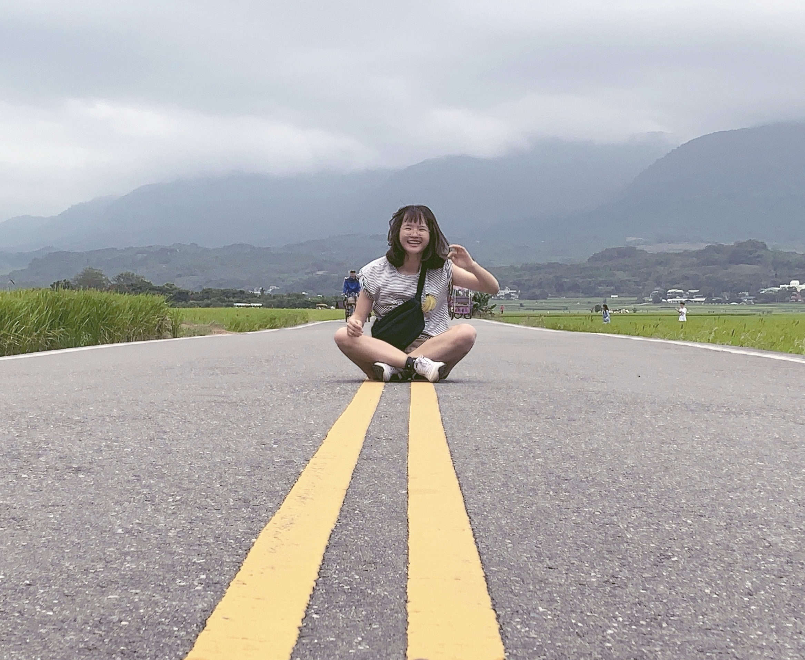

Hello and welcome! My name is Chen Yu, Wong.
I’m an undergraduate student of National Tsing Hua University in Taiwan currently studying Foreign Languages and Literature (FLL) and also Economics. I’ve always been intrigued by design, art, traveling, photography, country music, classic movies, detective novels, fabulous food, and even interesting conversations. In the Meantime, I’m still seeking to imagine the incredible, to achieve the extraordinary, to work hard for things that set my soul on fire, and to be surrounded by those who bring out the best of me.
I give my first try setting up a personal website for a project in my bilingual web design course. Having my own website has always been my dream because managing a website, especially bilingual one, is like connecting to lots of different people around the world. When it comes to the thematic of my website, I will focus on the graphic design field that I’ve been interested for a long time. I love to design experiences, big to small, digital to analogue, with moments of delight. Music also inspires a lot to my works, and I believe that simply enjoying life and the pleasure that come with it help in the design process. Function is beauty just as much as form, but combining the two is an ART. Yes, an art. I’m super excited to see how far I go in the design field, and this website is just the beginning.
大家好！我是翁晨瑜，歡迎大家來到我的個人雙語網站，目前就讀於國立清華大學外國語言學系和經濟系，因為選修課有了設計網站的機會，利用自己所學，創立一個關於自己興趣的雙語網站 一直是我的小夢想，此網站就像個無邊際的儲存空間，可以自由自在地做自己 同時也可以讓他人認識我。
從小就很喜歡畫東畫西、剪剪貼貼、塗塗抹抹，學過水彩、漫畫、油畫、水墨等等，對於各種藝術都有著莫名的著迷，尤其是視覺藝術，不管是創作、做海報、畫漫畫、設計，都是我的興趣所在，因此想藉此網站，分享我的一些日常創作以及背後靈感，同時，也介紹一些我十分崇敬的藝術家們和作品風格，希望我的網站能成為您熱愛設計的起點。
